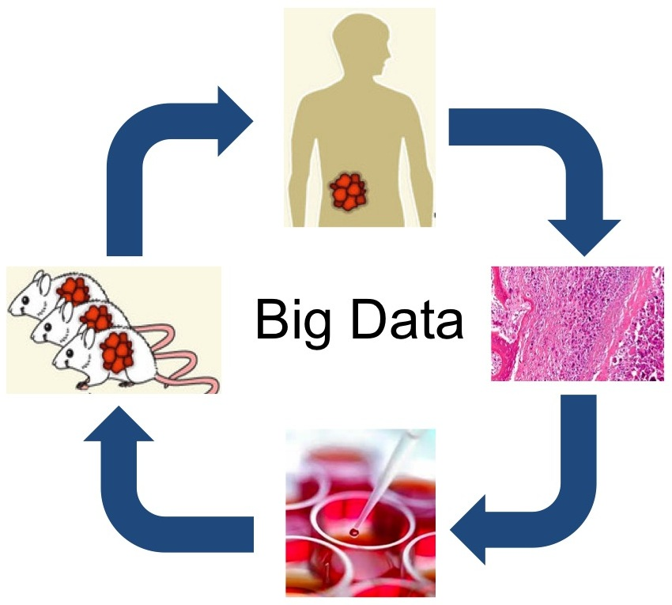

Our lab is interested in leveraging OMICS, electronic medical records, and advanced machine learning methods to identify new therapeutics and biomarkers ( B. Chen, 2016, B. Chen, 2020). Our three main research areas are: 1) OMICS-based drug discovery, 2) OMICS-based biomarker and target discovery, and 3) virtual platform development to support translational research. The data we primarily use include bulk/single-cell transcriptomics, spatial transcriptomics, and EMR/EHR. In addition to traditional bioinformatics methods (e.g., sequence analysis), we actively develop and implement new machine learning models such as transfer learning and deep reinforcement learning to deal with the emerging big data. To achieve the goal of identifying new therapeutics, we closely collaborate with data mining experts, statisticians, bench scientists, medicinal chemists, and physicians.

Quick update: Bin has been promoted to Full Professor and has taken a one-year sabbatical. He is a Visiting Professor at Harvard Medical School this fall and an incoming Visiting Fellow at the University of Cambridge in the spring.
Here is the summary for the 2024-2025 academic year.
Two manuscripts are accepted for publication in Cell (link, MSU Today, Fox 2 News, Behind-the-Scenes Story) and Drug Discovery Today (link).
Dr. Bin Chen serves as a standing member of the NIH BDMA study section (2025-2029).
My tribute to my mentor, Dr. Atul Butte, who passed away on June 13, 2025.
Here is the summary for the 2023-2024 academic year.
We no longer provide regular updates; instead, we share only our annual report and the most significant updates. Here is the one for the 2022-2023 academic year.
Our DIPG drug repurposing manuscript and our EHR LOINC mapping manuscript are accepted in Acta Neuropathologica Communications and JAMIA Open, respectively.
Older news (2016 to Aug 2022) is in the News Archive.